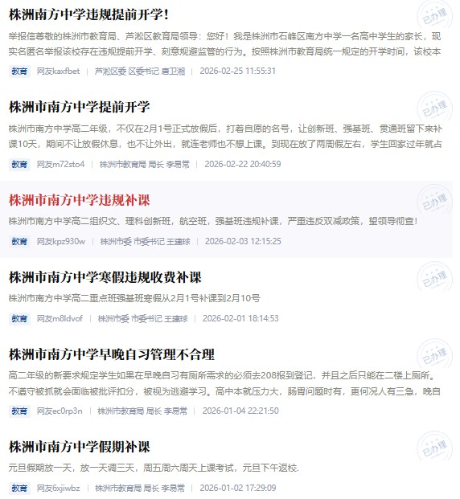

实时编辑预览
当前文章已开启实时编辑预览功能，您可以在文章正式发布之前预览当前编写的状态。
株洲市南方中学，拥有着六十多年校史，而和校史一样长的，只能是学期。
今年的暑假姗姗来迟，七月一号本应是市内所有学生狂欢的日子，可今年大部分学校都在七月十多号放假，而我们伟大的南方中学，似乎想消磨完整个暑假，期末考试已考完，等待我们的是补课；这个学期没有双休，补课期间依旧没有双休。微信群内，小角落里，几乎所有学生都怨声载道，而当我们鼓起勇气询问年级组组长到底何时放假，他的回复是：
你想放假可以明天不来
无疑，他们想把违规补课贯彻落实到底，在以前，暑假意味着空调、西瓜、WIFI，而在学校里只有无尽的课本和试卷。我并不抗拒学习，但我无法忍受本应是休息时间还要来上学，更何况每天6点起床晚上10才放学，每周在家时间不超过1天呢？
斗争到底？
“之前有人举报南方，结果问题根本没解决。”

受着？
我tm上学不是来上朝，我想来就来不想来就不来，我交了学费的迟到还管我？ 但是学该上还是得上，起码我现在请不到假。
那就享受其中！
我宣布，Nanfang Summer of Code，正式开始！
我们合法持有学校机房的钥匙，每天中午午休时间和阳光体育，都能在机房享受玩电脑的乐趣。
我们将在这二十多天甚至更长时间内合作完成一个开源项目。事实上，与其将这些活动与gsoc相类比，不如说是一场校园内最大的黑客松。我们看似时间很长，实际每天摸到电脑的时间只有两小时多；我们不需要生产级代码，只要大家玩的开心就行，并且，最重要的是分工合作。
我们只有两台电脑可以远程连到家里的高性能电脑，因此我们要将时间最大化利用，AbCd在搭建后端时，我负责前端UI；我在一旁休息时，kingstar在用Photoshop制图。并且，我们有极其严苛的熔断机制，一旦时间超过14:00，立即离开机房准备上课，无论正在做什么。就这样，我们享受着免费的空调和电脑，在别人还在学校坐牢时，我们好像已经在参加一个编程夏令营。
除了Coding之外，我们还有很多娱乐活动，Kingstar自己带了个手柄，闲暇之余在机房玩游戏；我不玩电脑游戏，有时学了大半天太累了也会来机房翻翻邮件，听听歌，然后把三四张凳子拼在一起躺着睡觉——这里空调制冷效果比午托教室好多了。之前我和AbCd都想在补课期间把手机带过来玩，但现在再没人提起这件事，用AbCd的话说就是“我们有这么好的条件没有任何带手机来的理由”，这是真的，想玩手机就用Android Studio造一台嘛，当然，事实证明我还是得带手机来，这样的话我就能拍几张照给大家看了。
然而，我们的日子也没有这么好过：AbCd是寄宿生，中午逃出去没人管；kingstar回家吃饭，因此也无人管辖，而我是午托生，每次12:50必须签到打卡，并且还有人盯着不能溜走。学校那批人依旧喜欢モニタニング，中午还要查监控看有没有人回班，这给我的出逃带来了极大的风险隐患。但凭借着我极其强大的反侦察意识，每天中午依旧能来这里VibeCoding。七月中旬的株洲气候异常闷热，但每天中午我经过通往科技楼的架空连廊，我都能感受到那种自由且快活的空气。
我们的暑假延后了，但我们提前享受其中，那就叫它延前的假期吧。